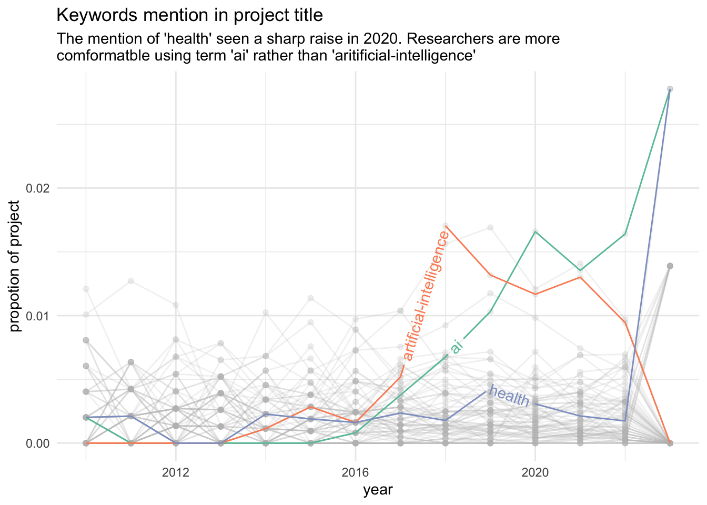

This is due to project migration when person of interests changes occupation;
When this happens the ProjectReference will ends with a slash.
How well does the two data set join
Code
JOIN_META_KEY =c("id"="ProjectId")desc_key = gtr_desc[[names(JOIN_META_KEY)]]meta_key = gtr_meta[[JOIN_META_KEY[[1]]]]stopifnot(!any(duplicated(desc_key)),!any(duplicated(meta_key)))can_join =intersect(desc_key, meta_key)desc_cant_join =setdiff(desc_key, meta_key)meta_cant_join=setdiff(meta_key, desc_key)pcg =round(length(can_join) /nrow(gtr_desc) *100)message(glue::glue("{ pcg } % of description can find matching porject id in the csv export;\n","\nNumbers breakdown:\n","\t - {length(can_join)} can join;\n","\t - {length(desc_cant_join)} description will be taken out;\n","\t - {length(meta_cant_join)} from csv file will be taken out;\n"))
86 % of description can find matching porject id in the csv export;
Numbers breakdown:
- 4453 can join;
- 722 description will be taken out;
- 722 from csv file will be taken out;
Linked/Duplicated project
partial project or migrated project
## migrated project consist of this patternPARTIAL_PTN_DCT='(/[1-9])$'## waggle some columns for analyticsgtr_pj = gtr_meta |>mutate(is_partial =str_detect(ProjectReference, PARTIAL_PTN_DCT),project_ref =str_replace(ProjectReference,PARTIAL_PTN_DCT,""),part =str_extract(ProjectReference, PARTIAL_PTN_DCT) |>str_extract("\\d+") |>as.numeric() |>coalesce(0) ) |># filter(is_partial) |> group_by(project_ref) |>mutate(occurance =n()) |>ungroup() |>relocate(ProjectReference, FundingOrgName, LeadROName, ProjectId, is_partial,project_ref,part,occurance )## early stop if this is no longer truestopifnot("Project Reference is Unique!"=length(unique(gtr_pj$ProjectReference)) ==nrow(gtr_pj),"Project Refrence contain null!"=!any(is.na(gtr_pj$ProjectReference)))## a lot of these are false duplicate? or have they simply not been included in ## the project? gtr_pj |>group_by(occurance) |>summarise(n_projects=n())
partial project or migrated project
## actually majority of these project will false alert
## track progression of top n over yearsplt_style_change =function(text_by_year, fav_words=c("artificial-intelligence","ai","health", "machine-learning","learning"),limit_rank =10,weight =c("pcg", "absolute") ) {if(weight[1] =="absolute") { weightQ =quo(n_prj) } elseif (weight[1] =="pcg") { weightQ =quo(pcg_prj) } else {stop() } word_ranked = text_by_year |># filter(year > 2010) |> rank_words(year) |>group_by(year) |>mutate(pcg_prj = n_prj/sum(n_prj)) |>ungroup() top_n = word_ranked |>filter(rank <= limit_rank) |>## join back words that were crop out in top n rankingselect(-n_prj, -rank,-pcg_prj) top_n_complete = tidyr::expand(top_n, year, word) |>left_join(word_ranked, c("year","word")) |>mutate(across(c(n_prj, pcg_prj), ~coalesce(.x,0))) |>mutate(rank =coalesce(rank, max(word_ranked$rank +1))) top_n_complete |>filter(year >=2010& year <=2023) |>ggplot(aes(x=year,y=!! weightQ, color=word)) +geom_line() +geom_point() +theme(legend.position ="none", axis.text.y.right =element_text(size =20)) +# scale_y_reverse() +gghighlight(word %in% fav_words,unhighlighted_params=list(alpha=0.2),line_label_type ="text_path"#"sec_axis" ) +scale_color_brewer(palette="Set2") +theme_minimal()}
Code
INTERESTING_WORDS =c("artificial-intelligence","ai","health")title_word_by_year |>plt_style_change( INTERESTING_WORDS ) +ylab("propotion of project") +ggtitle("Keywords mention in project title", stringr::str_wrap(glue::glue("The mention of 'health' seen a sharp raise in 2020. ","Researchers are more comformatble using term 'ai' rather than 'aritificial-intelligence'"),80) )

Code
INTERESTING_WORDS =c("artificial-intelligence","ai","health")title_word_by_year |>plt_style_change( INTERESTING_WORDS,weight="pcg" ) +ylab("absolute number of project")